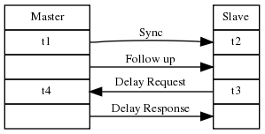
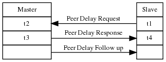
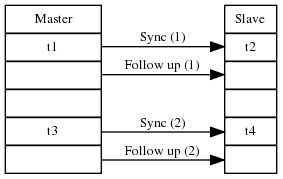
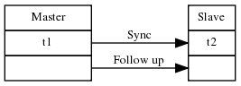

The Cavium Inc. implementation of the IEEE1588 specification for Precision Time Protocol (PTP) supports all OCTEON models. The implementation uses hardware timestamps available in OCTEON II for better accuracy, or reverts to software timestamps on OCTEON and OCTEON Plus chips. Throughout this document and the source code, the IEEE1588 specifications are called out to help reference where concepts and data are directly dictated by the specification. These generally refer to a specific section number in the IEEE specification.
The IEEE 1588 specification has two major versions, 2004 and 2008. The version from 2004 is commonly referred to as PTPv1, while 2008 is referred to as PTPv2. Unfortunately the two standards do not interoperate directly, so most systems choose only one for use in a complete synchronization system. PTPv2 defines an optional translation compatibility for allowing PTPv1 clocks to synchronize with PTPv2 clocks in IEEE1588-2008 section 18. Cavium Inc. implementation of the two standards can be found in 3. PTPv2 - IEEE 1588-2008 and 4. PTPv1 - IEEE 1588-2004.
Sections from the specification that are implemented:
Optional Features from IEEE1588-2008 that are not supported:
In order to synchronize a slave clock with a master, three calculations must be performed to characterize the differences between the two clocks. First the network delay between the clocks must be measured. Second the slave must calculate its clock tick rate in comparison to the master. Finally the slave must measure its clock's time with respect to the absolute value of the master clock. Each of these calculations is covered in the following sections.
PTPv2 defines two possible methods of measuring the delay between the slave and master clocks.
Delay Mechanism | Peer Delay Mechanism |
|---|---|

|

|
When using the delay mechanism:
When using the peer delay mechanism:
The Peer delay machanism provides better path delay calculation than the older delay mechanism, but it can only be used when both peers support the protocol. As an example of how peer delay and normally delay messages can be used, refer to the figure below.
In the above figure, peer delay calculations should be performed on these links:
Less accurate delay calculations must be performed between these clocks:
As synchronization messages pass through switch 1 on their way toward slaves A-C the switch will update the packet timing data. Switch 1 will change the correctionField of each message to account for the measured delay of the Master to switch link. Switch 1 will also update Follow Up messages with the time the Sync messages took to traverse the intervals of the switch. This allows slaves A-C to calculate their offset from Master very accurately. Similarly Slave E will update message timing based on peer delay from slave C. Again this will be quite accurate.
When Slave D receives a message from Slave B through switch 2, it will not know how much time was spent inside of the switch. The best estimate slave D can perform is to measure the delay through the switch to slave B and hope it is consistent. Modern "store and forward" switches do not have constant forwarding times due to changing port load and internal processing. Latency through these switch varies randomly in the order of a few microseconds.
Synchronization Mechanism |
|---|

|
The clock ticks for the master between the two syncs is t3-t1. The clock ticks for the slave between the two syncs is t4-t2. If the clocks are perfectly synchronized, these two values should be identical. If they are not identical, this represents clock drift between the master and slave. A scale factor of (t3-t1)/(t4-t2) for the slave's clock rate would make it match the master.
Synchronization Mechanism |
|---|

|
Once the meanPathDelay has been calculated and the slave's clock rate has been synchronized with the master's clock, it is possible to figure out the slave's absolute offset from the master.
If offsetFromMaster is small, the clock rate of the slave can be skewed slightly to bring it into synchronization with the master. Larger values of offsetFromMaster cause the slave to set its internal clock causing a discontinuity.
IEEE1588-2008 defines unicast message support as an optional feature. The purpose of this option is to allow clock synchronization over a WAN network where not all switches/routers in the network support PTP. The diagram below demonstrates an example system where unicast messaging would be necessary.
Master and Slave A will be able to communicate on the local network using multicast messages as defined in IEEE1588-2008. Router 1 will block all messages from both Master 1 and Slave A from leaving the local network. This leaves Slave B unable to connect to the Master's clock domain. In order to get messages between Slave B and Master, unicast routable messages must be sent through router 1, the WAN, and router 2. It is quite rare for routers to support the PTP protocol, so messages are forward without any latency information. The accuracy of Slave B's clock is completely dependent on the routers and WAN have a constant delay time. Most WANs have latencies in the range of 10-100 milliseconds with random variations. These random latencies will limit the accuracy of Slave B's clock synchronization to 10's of milliseconds.
In sparse setups where network delay may change randomly, it is recommended the remote node only match clock frequency with the master. Per the Telecom 1588 profile, nodes may choose to not calculate network delay and only use synchronization messages for frequency matching. The OCTEON PTP 1588v2 implementation supports frequency only as well as full frequency and phase matching.
The table below summarizes the supported 1588v2 signalling messages.
TLV Type | Supported |
|---|---|
Management TLVs | See table below |
Organization Extension | No |
Optional unicast message negotiation TLVs | |
REQUEST_UNICAST_TRANSMISSION | Yes |
GRANT_UNICAST_TRANSMISSION | Yes |
CANCEL_UNICAST_TRANSMISSION | Yes |
ACKNOWLEDGE_CANCEL_UNICAST_TRANSMISSION | Yes |
Optional path trace mechanism TLV | |
PATH_TRACE | Yes |
Optional alternate timescale TLV | |
ALTERNATE_TIME_OFFSET_INDICATOR | No |
Experimental TLVs | |
Security TLVs | |
AUTHENTICATION | No |
AUTHENTICATION_CHALLENGE | No |
SECURITY_ASSOCIATION_UPDATE | No |
Cumulative frequency scale factor offset | |
CUM_FREQ_SCALE_FACTOR_OFFSET | No |
The table below summarized the supported 1588v2 management messages.
Management Id | Supported |
|---|---|
Applicable to all node types | |
NULL_MANAGEMENT | Yes |
CLOCK_DESCRIPTION | Yes |
USER_DESCRIPTION | Yes |
SAVE_IN_NON_VOLATILE_STORAGE | No |
RESET_NON_VOLATILE_STORAGE | No |
INITIALIZE | No |
FAULT_LOG | No |
FAULT_LOG_RESET | No |
Applicable to ordinary and boundary clocks | |
DEFAULT_DATA_SET | Yes |
CURRENT_DATA_SET | Yes |
PARENT_DATA_SET | Yes |
TIME_PROPERTIES_DATA_SET | Yes |
PORT_DATA_SET | Yes |
PRIORITY1 | Yes |
PRIORITY2 | Yes |
DOMAIN | Yes |
SLAVE_ONLY | Yes |
LOG_ANNOUNCE_INTERVAL | Yes |
ANNOUNCE_RECEIPT_TIMEOUT | Yes |
LOG_SYNC_INTERVAL | Yes |
VERSION_NUMBER | Yes |
ENABLE_PORT | Yes |
DISABLE_PORT | Yes |
TIME | Yes |
CLOCK_ACCURACY | Yes |
UTC_PROPERTIES | Yes |
TRACEABILITY_PROPERTIES | Yes |
TIMESCALE_PROPERTIES | Yes |
UNICAST_NEGOTIATION_ENABLE | Yes |
PATH_TRACE_LIST | Yes |
PATH_TRACE_ENABLE | Yes |
GRANDMASTER_CLUSTER_TABLE | No |
UNICAST_MASTER_TABLE | No |
UNICAST_MASTER_MAX_TABLE_SIZE | No |
ACCEPTABLE_MASTER_TABLE | No |
ACCEPTABLE_MASTER_TABLE_ENABLED | No |
ACCEPTABLE_MASTER_MAX_TABLE_SIZE | No |
ALTERNATE_MASTER | No |
ALTERNATE_TIME_OFFSET_ENABLE | No |
ALTERNATE_TIME_OFFSET_NAME | No |
ALTERNATE_TIME_OFFSET_MAX_KEY | No |
ALTERNATE_TIME_OFFSET_PROPERTIES | No |
Applicable to transparent clocks | |
TRANSPARENT_CLOCK_DEFAULT_DATA_SET | No |
TRANSPARENT_CLOCK_PORT_DATA_SET | No |
PRIMARY_DOMAIN | No |
Applicable to ordinary, boundary, and transparent clocks | |
DELAY_MECHANISM | Yes |
LOG_MIN_PDELAY_REQ_INTERVAL | Yes |
Using a properly configured PTP network with accurate timestamps on every hop, the OCTEON PTP 1588v2 implementation can achieve clock synchronization below 20ns, often below 10ns. The quality and frequency of the hardware PTP clock greatly affects this accuracy. As a general rule, clock synchronization is limited to three ticks of the PTP clock. For example, if your PTP reference clock runs at 100Mhz, your clock synchronization will be limited to around 30ns. Faster PTP clocks achieve better accuracy. Sub 10ns results have been achieved using the internal 800Mhz clock generated on CN63XX.
The ptp1588v2 example is organized into two parts, a PTP library and a simple daemon caller. In order to make it easy to integrate PTPv2 functionality into an existing Linux based application, all PTPv2 processing is done in a library that can easily be called from any application. The API for this library is documented in ptplib.h.
API Functions in ptplib:
Configuration defines in ptplib:
Configuration flags for ptplib_initialize:
TBD
Usage:
./ptp-1588v2 interface[:transport] [interface[:transport]]*
interface = Linux network device name (eth0, eth1, etc).
transport = Which transport to use (802.3, UDP). Defaults to 802.3.
Cavium Network's implementation of IEEE1588-2004 is based on the opensource project PTPd. From the web page (http://ptpd.sourceforge.net/), here is a description of PTPd:
The PTP daemon (PTPd) implements the Precision Time protocol (PTP) as defined by the IEEE 1588 standard. PTP was developed to provide very precise time coordination of LAN connected computers. PTPd is a complete implementation of the IEEE 1588 specification for a standard (non-boundary) clock. PTPd has been tested with and is known to work properly with other IEEE 1588 implementations. The source code for PTPd is freely available under a BSD-style license. Thanks to contributions from users, PTPd is becoming an increasingly portable, interoperable, and stable IEEE 1588 implementation. PTPd can run on most 32-bit little- or big-endian processors. It does not require an FPU, so it is great for embedded processors. PTPd currently runs on Linux, uClinux, FreeBSD, and NetBSD. It should also be easy to port to other platforms. PTPd is free. Everyone is welcome to use and contribute to PTPd.
PTPd is part of the Linux filesystem supplied as part of the OCTEON SDK. The source code can be found under linux/embedded_rootfs/storage/ptpd-1.0.0.tar.gz. Cavium used the opensource PTPd version 1.0 with a single source patch. This patch allows PTPd to be compiled using the Cavium GCC compiler, which is much newer than the one used by the PTPd project. This patch can be found in the same directory with a filename of ptpd-fix-limits.patch.
1.6.1